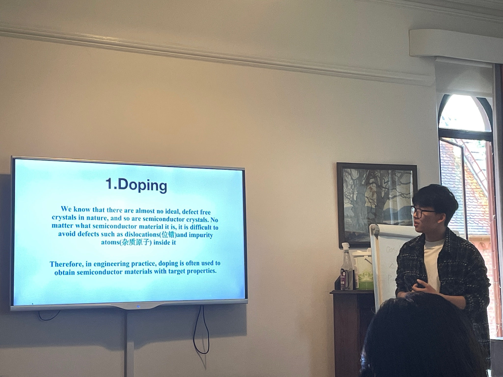
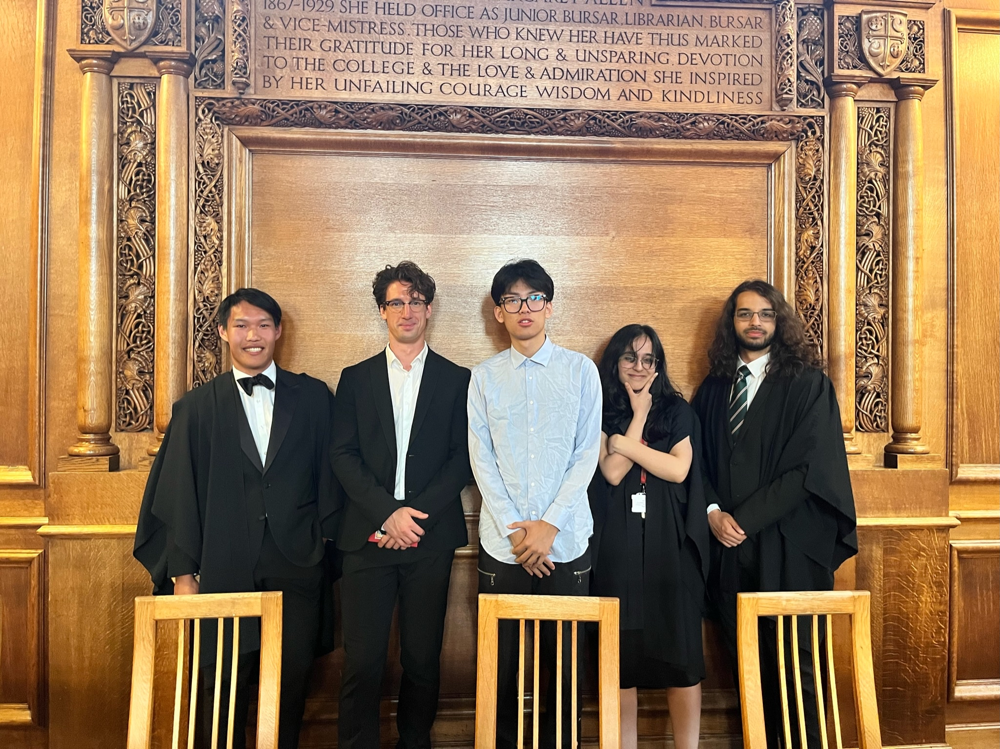
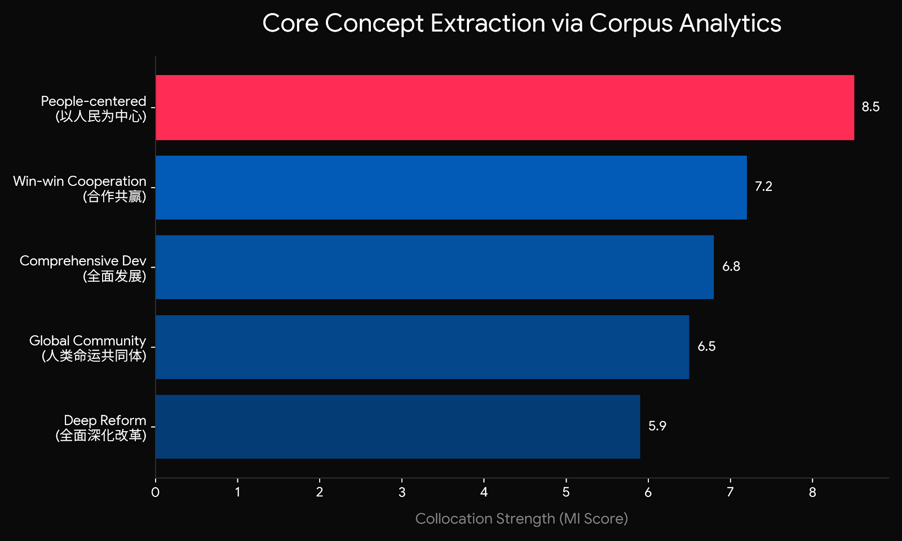
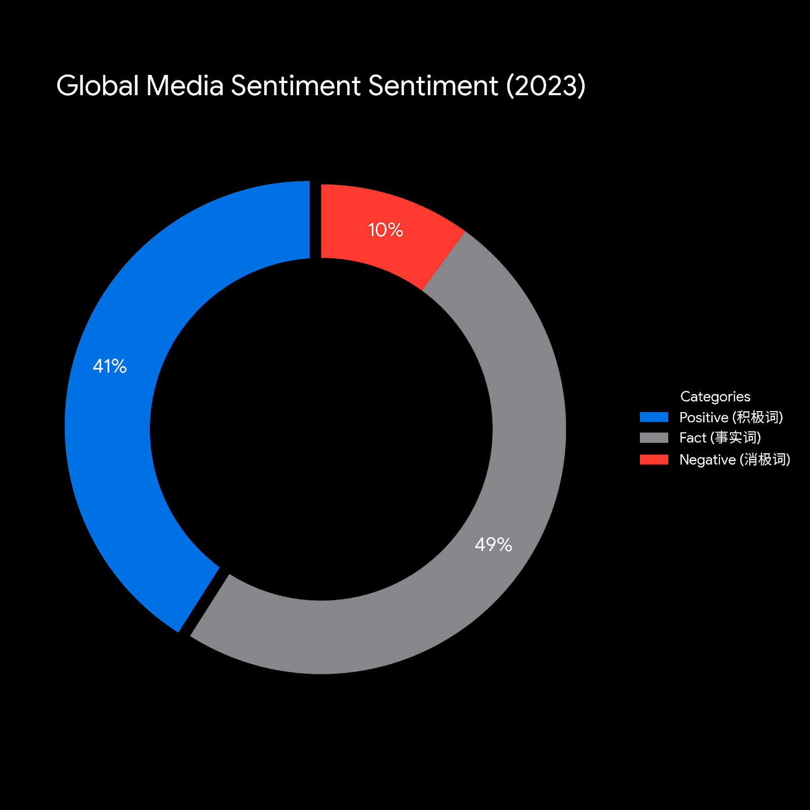
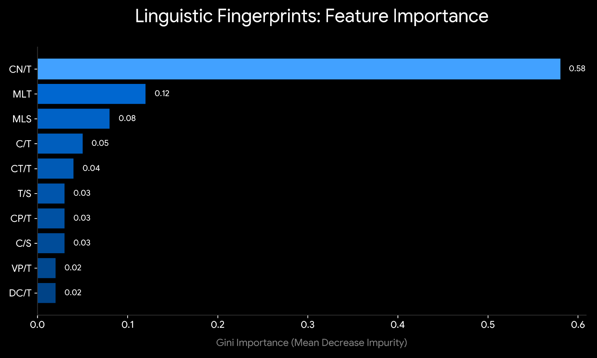
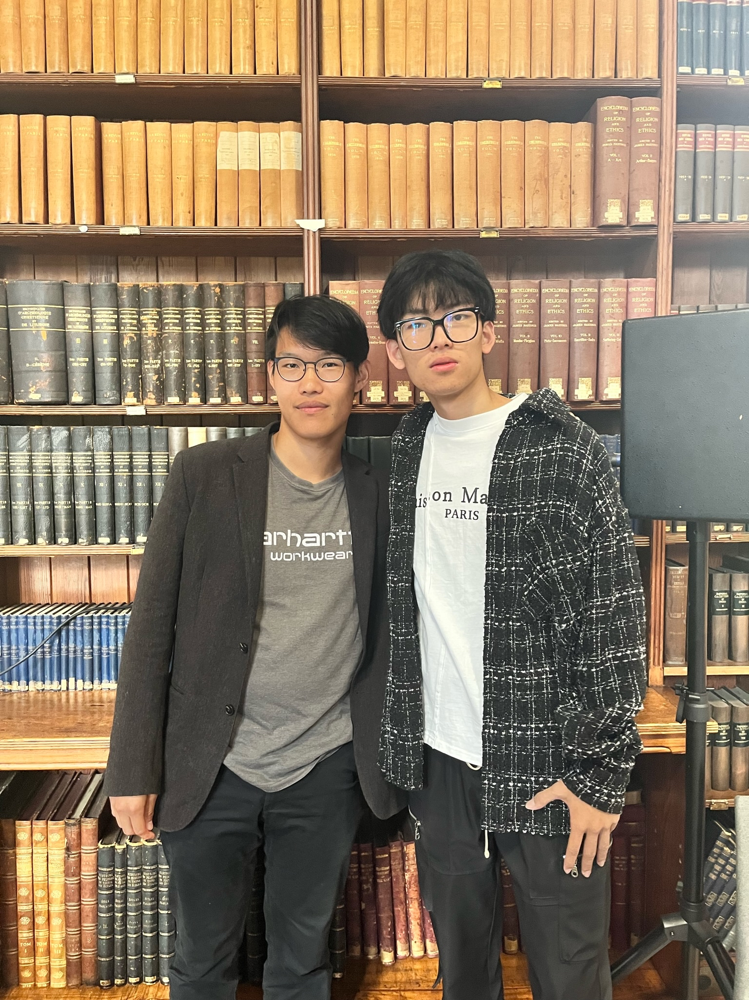

<!DOCTYPE html>
<html lang="zh-CN">
<head>
    <meta charset="UTF-8">
    <meta name="viewport" content="width=device-width, initial-scale=1.0">
    <title>王润泽 | Language. Is Intelligence.</title>
    <script src="https://cdn.tailwindcss.com"></script>
    <script crossorigin src="https://unpkg.com/react@18/umd/react.development.js"></script>
    <script crossorigin src="https://unpkg.com/react-dom@18/umd/react-dom.development.js"></script>
    <script src="https://unpkg.com/@babel/standalone/babel.min.js"></script>
    <style>
        @import url('https://fonts.googleapis.com/css2?family=Inter:wght@300;400;500;600;800&display=swap');
        @import url('https://fonts.googleapis.com/css2?family=Fira+Code:wght@400;500&display=swap');

        :root { --apple-black: #000000; --apple-gray: #1d1d1f; }
        body { background-color: var(--apple-black); color: #f5f5f7; font-family: 'Inter', -apple-system, sans-serif; scroll-behavior: smooth; overflow-x: hidden; }

        .text-gradient { background: linear-gradient(180deg, #fff 0%, #a1a1a6 100%); -webkit-background-clip: text; -webkit-text-fill-color: transparent; }
        .reveal { opacity: 0; transform: translateY(40px); transition: all 1.2s cubic-bezier(0.2, 0, 0, 1); }
        .reveal.active { opacity: 1; transform: translateY(0); }
        .glass { background: rgba(255, 255, 255, 0.05); backdrop-filter: blur(20px); border: 1px solid rgba(255,255,255,0.1); }

        .hero-img { transform: scale(1.05); opacity: 0.85; transition: all 2s ease-out; }
        .hero-img.loaded { transform: scale(1); opacity: 0.75; }
        .text-shadow-apple { text-shadow: 0 4px 20px rgba(0,0,0,0.8); }

        .apple-btn {
            background: #f5f5f7; color: #000; padding: 14px 32px; border-radius: 980px; font-weight: 600; transition: all 0.3s ease; display: inline-block; cursor: pointer;
        }
        .apple-btn:hover { background: #fff; transform: scale(1.05); box-shadow: 0 0 20px rgba(255,255,255,0.2); }

        .modal-enter { animation: modalFadeIn 0.3s cubic-bezier(0.16, 1, 0.3, 1) forwards; }
        @keyframes modalFadeIn { from { opacity: 0; transform: scale(0.95) translateY(10px); } to { opacity: 1; transform: scale(1) translateY(0); } }

        .tech-icon-wrapper { transition: all 0.4s cubic-bezier(0.175, 0.885, 0.32, 1.275); }
        .tech-icon-wrapper:hover { transform: scale(1.15) translateY(-5px); z-index: 10; box-shadow: 0 20px 40px rgba(0,0,0,0.5); }

        .font-mono { font-family: 'Fira Code', monospace; }
        @keyframes blink { 0%, 100% { opacity: 1; } 50% { opacity: 0; } }
        .cursor-blink { animation: blink 1s step-end infinite; }
    </style>
</head>
<body>
    <div id="root"></div>

    <script type="text/babel">
        const { useState, useEffect, useRef } = React;

        const techStackData = [
            { id: 'python', name: 'Python', icon: '🐍', category: 'Engineering', color: 'bg-blue-500/20 text-blue-400 border-blue-500/30', desc: '核心编程语言。用于数据清洗、逻辑处理以及机器学习算法的代码构建。' },
            { id: 'r', name: 'R', icon: '📊', category: 'Statistics', color: 'bg-indigo-500/20 text-indigo-400 border-indigo-500/30', desc: '统计分析主力。用于绘制复杂矩阵与特征权重分布，将语言特征转化为量化图表。' },
            { id: 'decisiontree', name: 'Decision Tree', icon: '🌳', category: 'Machine Learning', color: 'bg-emerald-500/20 text-emerald-400 border-emerald-500/30', desc: '依托工信部重点实验室训练框架，利用决策树模型构建分类逻辑，解决宏观语料特征的非线性提取难题。' },
            { id: 'wordsmith', name: 'WordSmith', icon: '📝', category: 'Linguistics', color: 'bg-teal-500/20 text-teal-400 border-teal-500/30', desc: '深度文本分析。提取高频词频与强搭配特征，量化跨文化语境下的隐藏情感倾向。' },
            { id: 'l2sca', name: 'L2SCA', icon: '⚙️', category: 'Linguistics', color: 'bg-orange-500/20 text-orange-400 border-orange-500/30', desc: '二语句法复杂度分析器。实现自动化批量处理，精准提取 14 个核心句法指标。' },
            { id: 'rf', name: 'Random Forest', icon: '🌲', category: 'Machine Learning', color: 'bg-green-500/20 text-green-400 border-green-500/30', desc: '通过计算 Gini Importance，训练出能够以 94% 准确率区分人类与 AI 文本的集成模型。' },
            { id: 'stochastic', name: 'Stochastic Process', icon: '📈', category: 'Statistics', color: 'bg-purple-500/20 text-purple-400 border-purple-500/30', desc: '随机过程理论。深刻理解马尔可夫链，为量化时间序列打下坚实理论基础。' },
            { id: 'llm', name: 'LLM Prompting', icon: '🤖', category: 'AI', color: 'bg-cyan-500/20 text-cyan-400 border-cyan-500/30', desc: '精通提示词工程，深度挖掘生成式 AI 的底层逻辑与语言生成边界。' },
            { id: 'latex', name: 'LaTeX', icon: '📜', category: 'Engineering', color: 'bg-gray-500/20 text-gray-300 border-gray-500/30', desc: '学术排版标准。完美呈现复杂的统计学数学公式与顶刊级图表排版。' },
            { id: 'git', name: 'Git', icon: '🐙', category: 'Engineering', color: 'bg-red-500/20 text-red-400 border-red-500/30', desc: '版本控制体系。管理数据分析脚本与大型工程代码，保持敏捷迭代与可追溯性。' },
        ];

        const LiveCrawlerPanel = () => {
            const [logs, setLogs] = useState(["[SYS] Initializing Quant Pipeline...", "[SYS] Connecting to Financial Data APIs..."]);
            const [sentimentScore, setSentimentScore] = useState(58.4);
            const [dataPoints, setDataPoints] = useState(0);

            const mockEvents = [
                "Fetching target [NVDA] semantic clusters...",
                "Running Tokenization & Stopword removal...",
                "Calculating TF-IDF weights for recent batches...",
                "Applying Decision Tree node split on [Rate]...",
                "Anomaly detected in variance, adjusting threshold...",
                "Updating live sentiment matrix..."
            ];

            useEffect(() => {
                const interval = setInterval(() => {
                    const newLog = `[${new Date().toISOString().split('T')[1].slice(0,-1)}] ${mockEvents[Math.floor(Math.random() * mockEvents.length)]}`;
                    setLogs(prev => [...prev.slice(-5), newLog]);
                    setSentimentScore(prev => {
                        let next = prev + ((Math.random() * 4) - 2);
                        return next > 90 ? 90 : (next < 10 ? 10 : next);
                    });
                    setDataPoints(prev => prev + Math.floor(Math.random() * 15) + 5);
                }, 1500);
                return () => clearInterval(interval);
            }, []);

            return (
                <div className="flex flex-col md:flex-row gap-6 bg-[#0a0a0a] rounded-[2rem] p-6 border border-white/10 shadow-2xl">
                    <div className="flex-1 bg-black rounded-xl p-4 font-mono text-[10px] md:text-xs text-green-400 border border-white/5 relative overflow-hidden flex flex-col justify-end min-h-[180px]">
                        <div className="absolute top-0 left-0 w-full h-6 bg-white/5 border-b border-white/10 flex items-center px-4 space-x-2">
                            <div className="w-2 h-2 rounded-full bg-red-500"></div><div className="w-2 h-2 rounded-full bg-yellow-500"></div><div className="w-2 h-2 rounded-full bg-green-500"></div>
                            <span className="text-gray-500 ml-4 font-sans text-[10px]">wang_runze_crawler.py</span>
                        </div>
                        <div className="space-y-1 mt-8 opacity-80">
                            {logs.map((log, i) => <div key={i}>{log}</div>)}
                            <div><span className="text-blue-400">runze@quant-lab:~$</span> <span className="cursor-blink bg-green-400 w-2 inline-block h-3"></span></div>
                        </div>
                    </div>
                    <div className="w-full md:w-64 flex flex-col gap-4">
                        <div className="flex-1 bg-white/5 rounded-xl p-4 border border-white/5 flex flex-col justify-center relative overflow-hidden">
                            <div className="text-[10px] text-gray-500 uppercase tracking-widest mb-1">Live Sentiment Index</div>
                            <div className="flex items-end space-x-2">
                                <div className={`text-4xl font-bold ${sentimentScore > 50 ? 'text-green-400' : 'text-red-400'} transition-colors duration-500`}>{sentimentScore.toFixed(1)}</div>
                                <div className="text-xs text-gray-500 mb-1">/ 100</div>
                            </div>
                            <div className="w-full h-1 bg-white/10 mt-4 rounded-full overflow-hidden"><div className={`h-full transition-all duration-500 ${sentimentScore > 50 ? 'bg-green-400' : 'bg-red-400'}`} style={{width: `${sentimentScore}%`}}></div></div>
                        </div>
                        <div className="h-20 bg-blue-500/10 rounded-xl p-4 border border-blue-500/20 flex flex-col justify-center">
                            <div className="text-[10px] text-blue-400 uppercase tracking-widest mb-1">Data Points Extracted</div>
                            <div className="text-2xl font-bold text-white font-mono">{dataPoints.toLocaleString()}</div>
                        </div>
                    </div>
                </div>
            );
        };

        const App = () => {
            const [heroLoaded, setHeroLoaded] = useState(false);
            const [isContactOpen, setIsContactOpen] = useState(false);
            const [activeTech, setActiveTech] = useState(techStackData[0]);

            useEffect(() => {
                setTimeout(() => setHeroLoaded(true), 100);
                const observer = new IntersectionObserver((entries) => {
                    entries.forEach(entry => { if (entry.isIntersecting) entry.target.classList.add('active'); });
                }, { threshold: 0.1 });
                document.querySelectorAll('.reveal').forEach(el => observer.observe(el));
            }, []);

            return (
                <div className="relative">
                    <nav className="fixed top-0 w-full z-50 bg-black/60 backdrop-blur-md border-b border-white/10 h-14 flex items-center justify-center space-x-8 text-[12px] font-medium tracking-widest uppercase text-gray-400">
                        <span className="text-white font-bold tracking-normal text-lg">王润泽</span>
                        <a href="#foundation" className="hover:text-white transition-colors">Foundation</a>
                        <a href="#ecosystem" className="hover:text-white transition-colors">Ecosystem</a>
                        <a href="#research" className="hover:text-white transition-colors">Deep Dive</a>
                        <a href="#action" className="hover:text-white transition-colors">Live Demo</a>
                    </nav>

                    <section className="relative h-screen flex flex-col items-center justify-center overflow-hidden">
                        
                        <div className="absolute inset-0 bg-gradient-to-t from-black via-black/40 to-transparent"></div>
                        <div className="relative z-10 text-center px-4 mt-32">
                            <h2 className="text-sm md:text-xl font-bold mb-4 text-blue-400 tracking-[0.2em] text-shadow-apple uppercase">Language Meets Logic</h2>
                            <h1 className="text-6xl md:text-[7rem] font-extrabold text-white leading-tight text-shadow-apple">
                                Language. <br/> Is Intelligence.
                            </h1>
                            <p className="mt-8 text-2xl md:text-4xl text-gray-200 font-medium max-w-4xl mx-auto text-shadow-apple leading-relaxed">
                                从北航到剑桥。<br/> 从语言学到统计学。
                            </p>
                        </div>
                    </section>

                    <section id="foundation" className="py-32 bg-black border-b border-white/5">
                        <div className="max-w-5xl mx-auto px-6">
                            <h2 className="text-4xl md:text-6xl font-bold mb-16 text-white reveal">The Foundation.</h2>

                            <div className="border-t border-white/20 flex flex-col md:flex-row py-10 reveal">
                                <div className="md:w-1/3 mb-4 md:mb-0 text-xl font-semibold text-white tracking-wide">Education</div>
                                <div className="md:w-2/3 space-y-8 text-gray-300 font-light">
                                    <div>
                                        <div className="flex justify-between items-start mb-1">
                                            <span className="text-xl font-medium text-white">北京航空航天大学 (Beihang University)</span>
                                            <span className="text-sm text-gray-500 font-medium">2022 - 2026</span>
                                        </div>
                                        <p className="text-md text-blue-400 font-medium mb-2">语言学专业学士 (BA in Linguistics)</p>
                                    </div>
                                    <div className="pt-4 border-t border-white/5">
                                        <div className="flex justify-between items-start mb-1">
                                            <span className="text-xl font-medium text-white">剑桥大学 (University of Cambridge)</span>
                                            <span className="text-sm text-gray-500 font-medium">2023</span>
                                        </div>
                                        <p className="text-md text-blue-400 font-medium mb-2">自然科学与量子力学模块访学</p>
                                    </div>
                                </div>
                            </div>

                            <div className="border-t border-white/20 flex flex-col md:flex-row py-10 reveal">
                                <div className="md:w-1/3 mb-4 md:mb-0 text-xl font-semibold text-white tracking-wide">National Labs & Milestones</div>
                                <div className="md:w-2/3 space-y-8 text-gray-300 font-light">
                                    <div className="flex items-start">
                                        <span className="text-blue-500 mr-4 mt-1">●</span>
                                        <div>
                                            <div className="text-white font-medium text-lg mb-1">工信部“语言信息与智能计算”重点实验室 & 中宣部舆情实验室</div>
                                            <div className="text-sm text-gray-400 leading-relaxed mb-1">
                                                主导《基于语料库的习近平新时代中国特色社会主义思想核心概念及其外宣策略研究》。获 <strong>航语杯一等奖</strong>。
                                            </div>
                                        </div>
                                    </div>
                                    <div className="flex items-start">
                                        <span className="text-blue-500 mr-4 mt-1">●</span>
                                        <div>
                                            <div className="text-white font-medium text-lg mb-1">多维度量化分析应用</div>
                                            <div className="text-sm text-gray-400 leading-relaxed mb-1">撰写《后疫情时代外媒视角下的中国新经济发展研究》。获 <strong>社科杯一等奖、航语杯一等奖、冯如杯三等奖</strong>。</div>
                                        </div>
                                    </div>
                                    <div className="flex items-start">
                                        <span className="text-blue-500 mr-4 mt-1">●</span>
                                        <div>
                                            <div className="text-white font-medium text-lg mb-1">前沿算法探索与应用</div>
                                            <div className="text-sm text-gray-400 leading-relaxed">深入推演《Distinguishing Human from Machine》，将随机森林等集成算法引入句法提取系统。</div>
                                        </div>
                                    </div>
                                </div>
                            </div>
                        </div>
                    </section>

                    <section id="ecosystem" className="py-32 bg-[#0a0a0a] border-b border-white/5 relative overflow-hidden">
                        <div className="max-w-7xl mx-auto px-6">
                            <h2 className="text-5xl md:text-6xl font-bold mb-6 text-gradient text-center reveal">The Ecosystem.</h2>
                            <p className="text-center text-gray-400 mb-20 reveal max-w-2xl mx-auto font-light">将鼠标悬停在图标上，查看底层的工程细节与量化战绩。</p>

                            <div className="flex flex-col lg:flex-row gap-16 items-center reveal">
                                <div className="w-full lg:w-1/2 grid grid-cols-4 md:grid-cols-5 gap-4">
                                    {techStackData.map((tech) => (
                                        <div
                                            key={tech.id}
                                            onMouseEnter={() => setActiveTech(tech)}
                                            className={`tech-icon-wrapper flex items-center justify-center w-16 h-16 md:w-20 md:h-20 rounded-2xl cursor-pointer border backdrop-blur-md ${tech.id === activeTech.id ? tech.color + ' ring-2 ring-white/20' : 'bg-white/5 border-white/10 text-white/50 hover:bg-white/10'}`}
                                        >
                                            <span className="text-3xl md:text-4xl filter drop-shadow-lg">{tech.icon}</span>
                                        </div>
                                    ))}
                                </div>
                                <div className="w-full lg:w-1/2 h-64">
                                    <div className="glass p-8 rounded-3xl h-full flex flex-col justify-center relative overflow-hidden transition-all duration-300">
                                        <div className="absolute top-0 right-0 w-32 h-32 bg-white/5 rounded-bl-full -mr-8 -mt-8"></div>
                                        <p className={`text-xs font-bold uppercase tracking-widest mb-3 ${activeTech.color.split(' ')[1]}`}>{activeTech.category}</p>
                                        <h3 className="text-4xl font-bold text-white mb-4 flex items-center gap-3">{activeTech.name}</h3>
                                        <p className="text-gray-300 text-lg font-light leading-relaxed">{activeTech.desc}</p>
                                    </div>
                                </div>
                            </div>
                        </div>
                    </section>

                    <section id="highlights" className="py-32 px-6 md:px-24 bg-black border-b border-white/5">
                        <div className="max-w-7xl mx-auto">
                            <h2 className="text-5xl md:text-7xl font-bold mb-16 text-gradient text-center reveal">Moments of impact.</h2>
                            <div className="grid grid-cols-1 md:grid-cols-12 gap-6">
                                <div className="md:col-span-8 bg-black rounded-3xl overflow-hidden reveal relative group border border-white/5">
                                    
                                    <div className="absolute bottom-10 left-10">
                                        <p className="text-blue-400 font-bold text-xs tracking-widest mb-2 uppercase">Academic Excellence</p>
                                        <h3 className="text-4xl font-bold text-white text-shadow-apple">与剑桥教授共话学术前沿</h3>
                                    </div>
                                </div>
                                <div className="md:col-span-4 bg-[#111] rounded-3xl overflow-hidden reveal relative group border border-white/5 p-8 flex flex-col justify-end" style={{transitionDelay: '200ms'}}>
                                    
                                    <div className="relative z-10">
                                        <p className="text-orange-500 font-bold text-xs tracking-widest mb-2 uppercase">Leadership Under Pressure</p>
                                        <h3 className="text-3xl font-bold text-white text-shadow-apple mb-3">意志与统帅力。</h3>
                                        <ul className="text-gray-300 text-sm font-light space-y-2">
                                            <li>● 院系篮球队队长</li>
                                            <li>● 两届航文杯赛事总冠军</li>
                                            <li>● 两届赛事唯一 MVP</li>
                                            <li>● 校辩论队核心辩手</li>
                                        </ul>
                                    </div>
                                </div>
                            </div>
                        </div>
                    </section>

                    <section id="research" className="py-32 bg-[#0a0a0a] relative">
                        <div className="max-w-7xl mx-auto px-6 grid md:grid-cols-2 gap-20 items-center mb-32 border-b border-white/5 pb-32">
                            <div className="reveal">
                                <h3 className="text-emerald-500 font-bold mb-4 tracking-widest uppercase text-sm">Corpus Analytics</h3>
                                <h2 className="text-5xl font-bold mb-8 text-white">时政文本的特征提取。</h2>
                                <p className="text-gray-400 text-lg font-light leading-relaxed mb-8">
                                    构建专门的计算语料库，运用共现频率与互信息评分（MI Score），提取核心概念的词汇权重分布。
                                </p>
                            </div>
                            <div className="reveal glass p-6 rounded-[2.5rem] bg-[#111]">
                                
                                <p className="mt-6 text-center text-[11px] text-gray-500 font-light italic uppercase tracking-widest">Fig 1.0: Core Concept Extraction Matrix</p>
                            </div>
                        </div>

                        <div className="max-w-7xl mx-auto px-6 grid md:grid-cols-2 gap-20 items-center mb-32 border-b border-white/5 pb-32">
                            <div className="reveal order-2 md:order-1 glass p-8 rounded-[3rem] bg-[#111]">
                                
                                <p className="mt-6 text-center text-[11px] text-gray-500 font-light italic uppercase tracking-widest">Fig 2.0: Global Media Sentiment Distribution</p>
                            </div>
                            <div className="reveal order-1 md:order-2">
                                <h3 className="text-pink-500 font-bold mb-4 tracking-widest uppercase text-sm">Sentiment Analysis</h3>
                                <h2 className="text-5xl font-bold mb-8 text-white">媒体话语的情感测量。</h2>
                                <p className="text-gray-400 text-lg font-light leading-relaxed mb-8">
                                    对后疫情时代经济报道进行时间序列分析与强搭配提取。量化呈现“积极词汇”与“事实词汇”的演变倾斜。
                                </p>
                            </div>
                        </div>

                        <div className="max-w-7xl mx-auto px-6 grid md:grid-cols-2 gap-20 items-center">
                            <div className="reveal">
                                <h3 className="text-blue-500 font-bold mb-4 tracking-widest uppercase text-sm">Machine Learning</h3>
                                <h2 className="text-5xl font-bold mb-8 leading-tight text-white">挖掘句法的隐形指纹。</h2>
                                <p className="text-gray-400 text-lg font-light leading-relaxed mb-8">
                                    训练随机森林分类器，针对 14 个句法维度进行 Gini Importance 计算。模型锁定 <strong>CN/T (复杂名词短语)</strong> 为判别特征的决定性指标。
                                </p>
                            </div>
                            <div className="reveal glass p-6 rounded-[2.5rem] shadow-[0_0_50px_rgba(0,113,227,0.1)]">
                                
                                <p className="mt-6 text-center text-[11px] text-gray-500 font-light italic uppercase tracking-widest">Fig 3.0: RF Feature Importance Analysis</p>
                            </div>
                        </div>
                    </section>

                    <section id="action" className="py-32 bg-black border-t border-white/10">
                        <div className="max-w-6xl mx-auto px-6">
                            <div className="text-center reveal mb-16">
                                <h2 className="text-4xl md:text-5xl font-bold mb-4 text-white">Real-time Quantitative Sentinel</h2>
                                <p className="text-gray-400 max-w-2xl mx-auto font-light">
                                    基于 Python 构建的实时数据监测流水线（Data Pipeline），涵盖从非结构化数据获取、清洗，到量化指标输出的端到端执行。
                                </p>
                            </div>
                            <div className="reveal">
                                <LiveCrawlerPanel />
                            </div>
                        </div>
                    </section>

                    <section id="summary" className="py-32 bg-[#050505] reveal border-t border-white/5">
                        <div className="max-w-7xl mx-auto px-6 text-center">
                            <h2 className="text-5xl md:text-[80px] font-extrabold tracking-tighter mb-6 text-gradient">Supercharged by Statistics.</h2>
                            <p className="text-xl text-gray-400 mb-20 font-light">跨界架构，重新定义核心竞争力。</p>

                            <div className="grid grid-cols-2 md:grid-cols-4 gap-12 py-12">
                                <div className="p-6">
                                    <div className="text-3xl md:text-5xl font-bold text-white mb-4">Beihang</div>
                                    <div className="text-gray-500 uppercase tracking-widest text-[11px] font-bold">Linguistics Background</div>
                                </div>
                                <div className="p-6 border-l border-white/10">
                                    <div className="text-3xl md:text-5xl font-bold text-white mb-4">R/Python</div>
                                    <div className="text-gray-500 uppercase tracking-widest text-[11px] font-bold">Data Science Ready</div>
                                </div>
                                <div className="p-6 border-l border-white/10">
                                    <div className="text-3xl md:text-5xl font-bold text-white mb-4">Modeling</div>
                                    <div className="text-gray-500 uppercase tracking-widest text-[11px] font-bold">Statistical Modeling</div>
                                </div>
                                <div className="p-6 border-l border-white/10">
                                    <div className="text-3xl md:text-5xl font-bold text-white mb-4">LLM</div>
                                    <div className="text-gray-500 uppercase tracking-widest text-[11px] font-bold">AI Research Mindset</div>
                                </div>
                            </div>
                        </div>
                    </section>

                    <footer id="contact" className="py-40 bg-[#161617] text-center px-4 relative z-10 border-t border-white/5">
                        <div className="max-w-4xl mx-auto reveal">
                            
                            <h2 className="text-4xl md:text-6xl font-bold mb-14 text-white">
                                将语言、数据与 AI 结合，<br/>创造无限可能。
                            </h2>
                            <button onClick={() => setIsContactOpen(true)} className="apple-btn text-lg px-12 py-4">联系我</button>

                            <div className="mt-32 pt-8 border-t border-white/10 flex flex-col md:flex-row justify-between items-center text-[11px] text-gray-500 font-medium uppercase tracking-widest">
                                <span>Built for High-Frequency Logic & Execution</span>
                                <span className="mt-4 md:mt-0">Copyright © 2026 王润泽.</span>
                            </div>
                        </div>
                    </footer>

                    {isContactOpen && (
                        <div className="fixed inset-0 z-[100000] flex items-center justify-center bg-black/60 backdrop-blur-xl p-4 modal-enter">
                            <div className="absolute inset-0 cursor-pointer" onClick={() => setIsContactOpen(false)}></div>
                            <div className="bg-[#1c1c1e] w-full max-w-sm rounded-[2rem] p-8 border border-white/10 relative text-center shadow-2xl">
                                <button onClick={() => setIsContactOpen(false)} className="absolute top-5 right-5 w-8 h-8 rounded-full bg-white/10 hover:bg-white/20 flex items-center justify-center transition-colors text-white">✕</button>
                                
                                <h3 className="text-2xl font-bold mb-1 text-white">王润泽</h3>
                                <p className="text-gray-400 text-xs mb-8 uppercase tracking-widest">Linguistics & Statistics</p>

                                <div className="space-y-4 text-left">
                                    <div className="bg-black/50 p-4 rounded-2xl border border-white/5 transition-colors hover:bg-black/80">
                                        <p className="text-[10px] text-gray-500 uppercase tracking-widest mb-1">Email</p>
                                        <p className="text-lg font-medium text-blue-400 select-all">w3273600348@gmail.com</p>
                                    </div>
                                    <div className="bg-black/50 p-4 rounded-2xl border border-white/5 transition-colors hover:bg-black/80">
                                        <p className="text-[10px] text-gray-500 uppercase tracking-widest mb-1">Phone / WeChat</p>
                                        <p className="text-lg font-medium text-white select-all">+86 1513840022</p>
                                    </div>
                                </div>
                                <a href="mailto:w3273600348@gmail.com" className="mt-8 block w-full bg-white text-black py-4 rounded-full font-bold hover:bg-gray-200 transition-colors shadow-lg text-center">
                                    一键发送邮件
                                </a>
                            </div>
                        </div>
                    )}
                </div>
            );
        };

        const root = ReactDOM.createRoot(document.getElementById('root'));
        root.render(<App />);
    </script>
</body>
</html>
